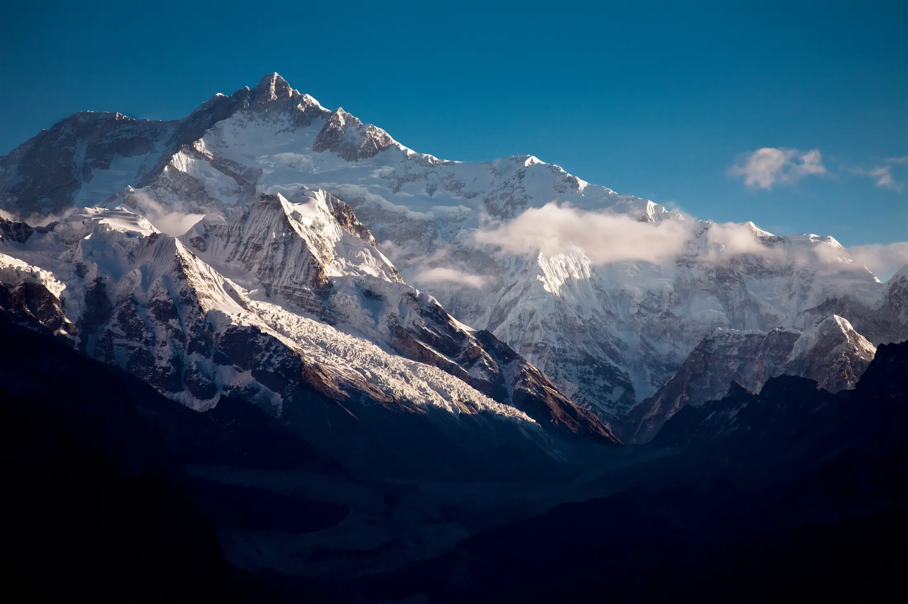
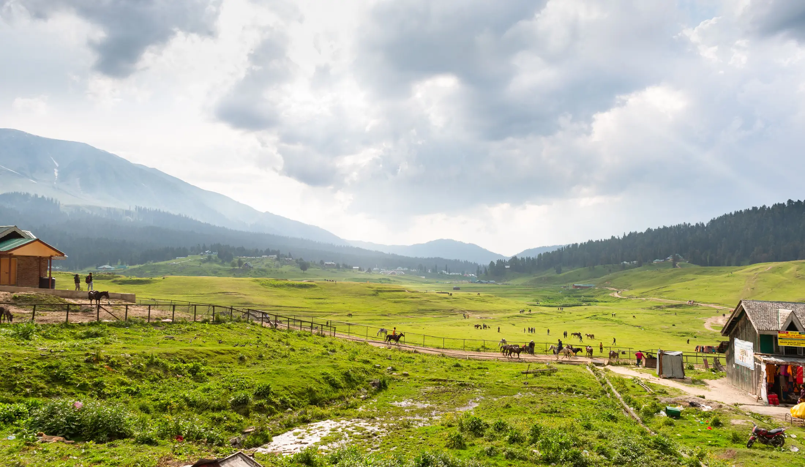

- Leave No Trace has seven principles: plan ahead, use durable surfaces, dispose of waste properly, leave what you find, minimise fire, respect wildlife and be considerate.
- Indian parks add their own rules: Govind National Park bans polythene and fires, the Valley of Flowers bans camping and single-use plastic, and Agasthyarkoodam bans plastic.
- Rules and closures change each season. Check with the forest office or operator, and carry out everything you carry in.
Leave No Trace is a set of seven principles for outdoor trips: plan ahead, use durable surfaces, dispose of waste properly, leave what you find, minimise fire, respect wildlife and be considerate of others. In India they sit on top of real rules that vary by park and state, so follow both.
What are the seven principles?
The Leave No Trace Center for Outdoor Ethics publishes the seven principles, and the US National Park Service reposts them with permission. Here they are, with what each means and an Indian example from the sources we checked.
| Principle | What it means | In India |
|---|---|---|
| 1. Plan ahead and prepare | Learn the area's rules, prepare for weather and emergencies, travel in small groups at quieter times. | Agasthyarkoodam needs online booking and a fitness certificate, with a cap of 70 trekkers a day (Onmanorama). |
| 2. Travel and camp on durable surfaces | Stay on trails and established campsites. | Govind National Park says to camp only at designated sites and not to leave the track. |
| 3. Dispose of waste properly | Carry out trash, food scraps and toilet paper; bury human waste 6 to 8 inches deep, 200 feet from water and trails. | Govind park: no polythene, carry all garbage out. |
| 4. Leave what you find | Look and photograph; do not take or disturb. | Govind park: do not pick plants or collect samples. |
| 5. Minimise campfire impacts | Use a stove; where fires are allowed keep them small and fully out. | Govind park: do not burn wood or leave fires, cigarettes or beedis behind. |
| 6. Respect wildlife | Observe from a distance and never feed animals; store food securely. | Govind park: do not feed, disturb or approach wildlife. |
| 7. Be considerate of other visitors | Yield to others, keep noise down, step downhill for pack animals. | Govind park: no loud music or equipment. |

What are the rules on plastic?
India's Plastic Waste Management Amendment Rules, 2021, notified on 12 August 2021, banned identified single-use plastic items from 1 July 2022, as PTI reported. They include plates, cups, glasses, cutlery, straws and trays, wrapping films, and PVC banners under 100 microns, and exempt compostable plastic. Park rules go further. Govind National Park, which covers Kedarkantha, Har Ki Dun and Rupin Pass, tells visitors not to use polythene or non-biodegradable items and to carry all garbage out. The Valley of Flowers bans single-use plastics, drones, and camping or overnight stays inside the valley, according to Outlook Traveller. Onmanorama reports that plastic is strictly prohibited on Agasthyarkoodam, with puja materials and alcohol also barred, because of its sensitive biodiversity.
In practice: bring a refillable bottle, repack snacks into reusable bags, and count your wrappers in and out. Trekkaro's packing list for the Valley of Flowers also says to avoid non-biodegradable wet wipes. Our packing list has the rest.
What about toilets and water?
Use the toilet tent or toilets your operator provides. Where there are none, the NPS version of Leave No Trace says to bury human waste 6 to 8 inches deep, at least 200 feet from water and trails, carry out toilet paper, and wash dishes and yourself away from water with little biodegradable soap. Govind park's rules also say not to contaminate water sources. For more on hygiene on the trail, see our guide for women trekkers.

Where is camping restricted or banned?
Camping rules differ. The Valley of Flowers bans overnight stays in the valley, so trekkers return to Ghangaria each day. Govind park limits camping to designated sites and bans tents outside them. Uttarakhand's High Court, according to Down To Earth, declined in September 2018 to lift a ban on night stays in alpine meadows, in a case that began with a 2014 petition about damage from trekking and night camping at places such as Bedni. Reports on the current status conflict and we could not confirm them from a court or government source, so ask your operator or the forest office about the meadow you plan to visit, such as Dayara Bugyal.
Crowds and closures
Closures are a form of Leave No Trace at a landscape scale. A report dated 25 June 2025 says the Maharashtra Forest Department barred entry to Kalsubai, Ratangad, Alang, Madan and Kulang forts and Sandhan Valley until 10 August, citing slippery trails, crowding and protection of the rare Sahyadri Croton plant. Outlook Traveller reported that the Karnataka Forest Department allows only 150 trekkers at each designated location under its ecotourism board, and that the state ordered a halt to trekking in areas without online booking after about 4,000 trekkers gathered at Pushpagiri Wildlife Sanctuary near Kumara Parvatha. Book through official channels, keep groups small and accept a closure. See also our guide to monsoon treks.
What can you do on every trek?
- Carry a small bag for all your waste, including wet wipes, wrappers and used tissues.
- Stay on the trail, even when it is muddy; widening the path damages the edges.
- Take only photographs. Do not pick flowers, plants or stones.
- Skip fires. Let your operator's stove do the cooking.
- Keep your distance from animals. Kedarkantha's page lists black bear, leopard and marmot among the animals seen.
- Keep noise down, greet other trekkers and step aside for mules.
- Ask before photographing people, and buy locally where you can.
Read the rules for your trek in the permits guide or on its page in the atlas, and confirm with the forest office.
The seven principles are published by the Leave No Trace Center for Outdoor Ethics. Park rules and orders change; confirm before you go. Treqz does not run treks.
Sources
- US National Park Service: Leave No Trace seven principles (from the Leave No Trace Center for Outdoor Ethics)
- Govind Wildlife Sanctuary and National Park: Kedarkantha trek page and rules
- Outlook Traveller: Valley of Flowers opens for 2026
- Onmanorama: Agasthyarkoodam trek dates and route
- Morung Express (PTI): Single-use plastic items prohibited from 1 July 2022
- Down To Earth: Uttarakhand HC ends night stays in meadows
- Pune Pulse: Entry banned at popular Maharashtra trekking spots (25 June 2025)
- Outlook Traveller: Brief trekking ban in Karnataka forests
- Trekkaro: Valley of Flowers things to carry
Quick questions
What are the seven Leave No Trace principles?
Plan ahead and prepare; travel and camp on durable surfaces; dispose of waste properly; leave what you find; minimise campfire impacts; respect wildlife; be considerate of other visitors.
Is plastic banned on treks in India?
India banned identified single-use plastic items from 1 July 2022. Govind National Park (Kedarkantha, Har Ki Dun) bans polythene and non-biodegradable items, the Valley of Flowers bans single-use plastic, and Agasthyarkoodam prohibits plastic.
What do I do about toilets on a trek?
Use the toilet tent or toilets your operator provides. Where there are none, Leave No Trace advice is to bury waste 6 to 8 inches deep at least 200 feet from water and trails, and carry out toilet paper.
Can I camp anywhere in the mountains?
No. Govind National Park says to camp only at designated sites, and the Valley of Flowers bans camping inside the valley. Uttarakhand's High Court also refused in 2018 to lift a ban on night stays in alpine meadows; check the current status for your trek.